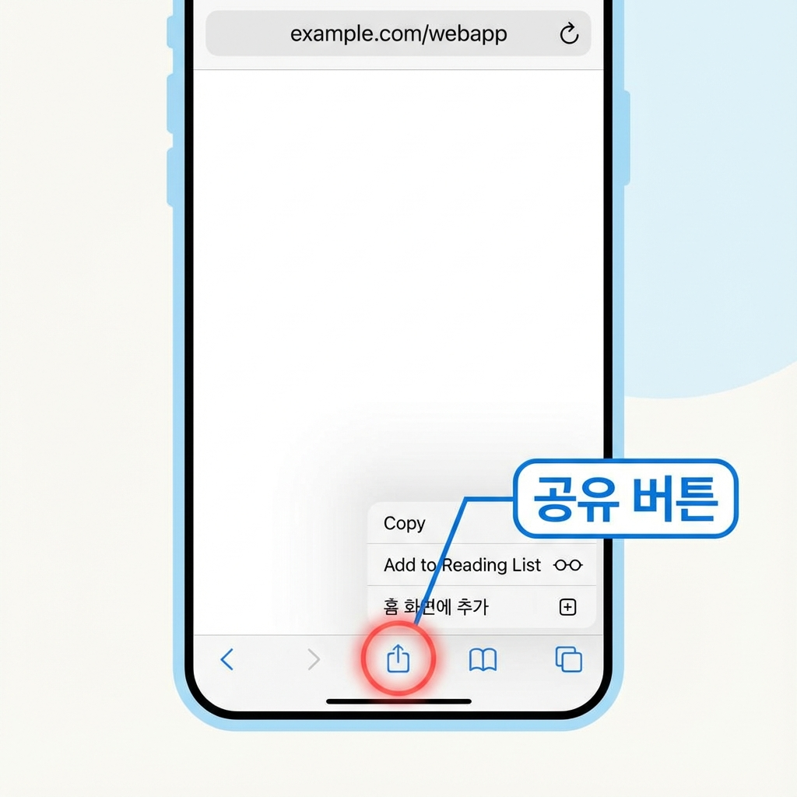
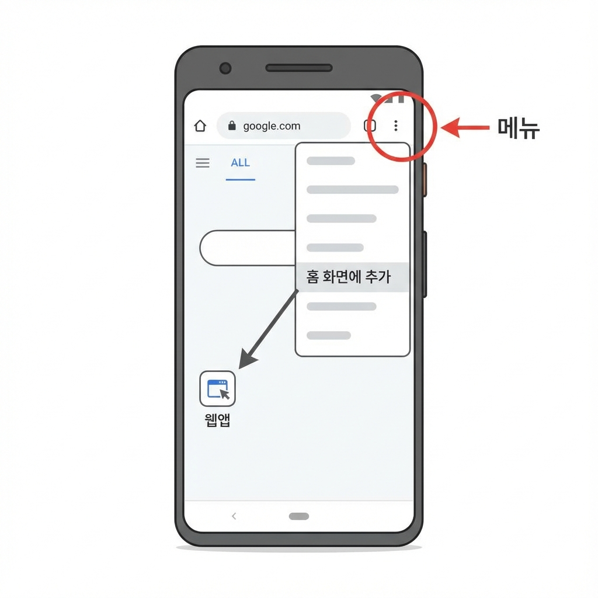
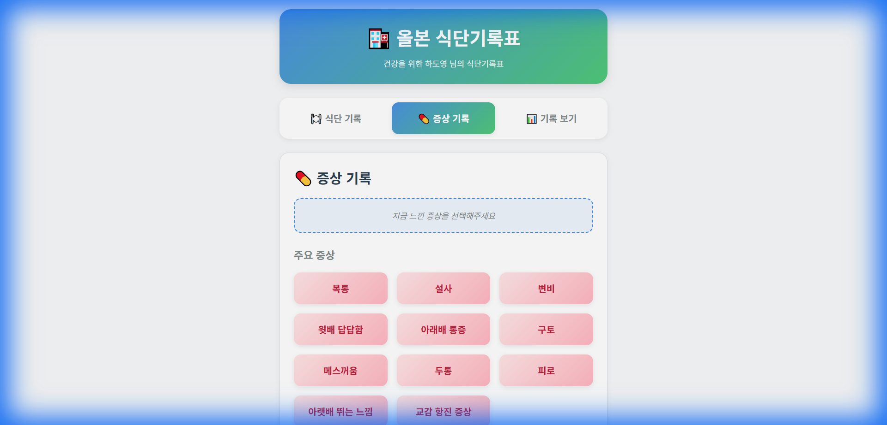
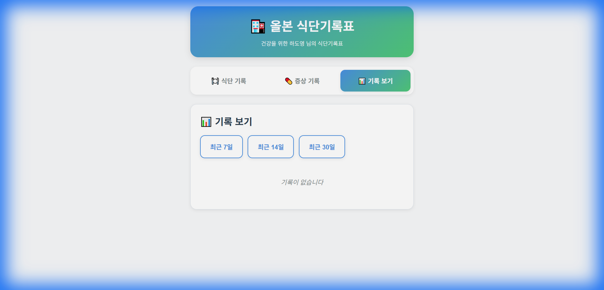

🏥 올본 식단기록표 사용 설명서
안녕하세요, 올본한의원입니다. 😊
이 앱은 환자분들께서 일상에서 섭취하신 음식과 증상을 쉽게 기록하고,
건강 상태를 관리할 수 있도록 준비되었습니다.
📱 1. 홈화면에 앱 추가하기
앱을 홈화면에 추가하시면 일반 앱처럼 편리하게 바로 접속하실 수 있습니다!
아이폰 (iPhone, Safari)
단계별 안내
- Safari 브라우저로 올본 식단기록표 앱에 접속해 주세요.
- 화면 하단 중앙의 '공유' 버튼을 눌러주세요.
💡 네모 안에 위쪽 화살표가 있는 아이콘입니다
- 나타난 메뉴에서 아래로 스크롤하여 '홈 화면에 추가' 를 찾아 선택해 주세요.
- 앱 이름을 확인하신 후 (기본값: 올본한의원)
- 오른쪽 상단의 '추가' 버튼을 눌러주세요.
- ✅ 완료! 이제 홈화면에서 흰 접시에 '올본'이 적힌 아이콘을 찾으실 수 있습니다.
안드로이드 (Android, Chrome)
단계별 안내
- Chrome 브라우저로 올본 식단기록표 앱에 접속해 주세요.
- 화면 오른쪽 상단의 점 세 개(⋮) 메뉴를 눌러주세요.
- '홈 화면에 추가' 또는 '앱 설치' 를 선택해 주세요.
💡 기기에 따라 메뉴 이름이 다를 수 있습니다
- 앱 이름을 확인하신 후 (기본값: 올본한의원)
- '추가' 또는 '설치' 버튼을 눌러주세요.
- ✅ 완료! 이제 홈화면에서 흰 접시에 '올본'이 적힌 아이콘을 찾으실 수 있습니다.
🍽️ 2. 식단 기록하기
음식을 드실 때마다 간편하게 기록해 주세요!

주요 음식에서 선택하기
- 앱을 실행하시면 '🍽️ 식단 기록' 탭이 먼저 보입니다.
- '주요 음식' 섹션에서 자주 드시는 음식들이 노란색 버튼으로 표시되어 있습니다.
- 예: 밥, 죽, 면요리, 빵, 수프, 떡/과자, 샐러드, 에너지바 등
- 드신 음식을 터치하여 선택하세요.
- 선택하시면 화면 상단의 선택 영역에 추가됩니다.
- 여러 음식을 선택하실 수 있습니다.
- 예: 밥, 김치, 된장찌개 등을 각각 선택
최근 입력한 음식 다시 선택하기
최근에 기록하셨던 음식들이 '최근 입력' 섹션에 표시됩니다.
자주 드시는 음식은 여기서 빠르게 다시 선택하실 수 있어요!
음식 검색하기
- '음식 검색' 섹션의 검색창을 찾아주세요. (🔍 아이콘)
- 찾으시는 음식 이름을 입력하세요.
- 예: "닭", "김치", "커피" 등
- 검색 결과가 바로 아래에 나타납니다.
- 원하시는 음식을 터치하여 선택하세요.
목록에 없는 음식 직접 입력하기
먹은 음식이 목록에 없으신가요? 직접 추가하실 수 있어요!
- '직접 입력' 섹션의 입력창을 찾아주세요.
- "목록에 없는 음식 입력..." 이라고 되어 있습니다.
- 음식 이름을 입력하세요.
- 예: "떡볶이", "수제 샐러드", "단호박죽" 등
- 옆의 '➕ 추가' 버튼을 누르거나 키보드의 '완료' 또는 'Enter'를 누르세요.
- ✅ 입력하신 음식이 자동으로 선택 목록에 추가됩니다!
선택한 음식 취소하기
실수로 잘못 선택하셨나요?
화면 상단의 선택된 음식 옆에 있는 '×' 표시를 터치하시면 선택이 취소됩니다.
식단 기록 저장하기
- 음식을 모두 선택하셨다면, 화면 하단의 초록색 '✅ 식단 기록 저장' 버튼을 눌러주세요.
- 현재 날짜와 시간이 자동으로 기록되어 저장됩니다.
- "저장되었습니다!" 메시지가 나타나면 완료! ✨
- 선택했던 음식들은 자동으로 초기화되어 다음 식사를 기록하실 준비가 됩니다.
💊 3. 증상 기록하기
불편한 증상이 있으실 때 바로바로 기록해 주세요. 치료에 큰 도움이 됩니다!
주요 증상에서 선택하기
- 화면 상단의 '💊 증상 기록' 탭을 선택해 주세요.
- '주요 증상' 섹션에서 자주 발생하는 증상들이 분홍색 버튼으로 표시되어 있습니다.
- 예: 복통, 설사, 변비, 위배 민감함, 어지러움, 구토, 두통, 피로 등
- 현재 느끼시는 증상을 터치하여 선택하세요.
- 여러 증상을 동시에 선택하실 수 있습니다.
목록에 없는 증상 직접 입력하기
- '직접 입력' 섹션의 입력창을 찾아주세요.
- "목록에 없는 증상 입력..." 이라고 되어 있습니다.
- 증상을 자세히 입력하세요.
- 예: "식후 30분 뒤 배 팽만감", "손바닥 가려움", "눈 충혈", "입 안 따가움", "무릎 통증" 등
- 옆의 '➕ 추가' 버튼을 누르거나 키보드의 '완료' 또는 'Enter'를 누르세요.
- ✅ 입력하신 증상이 자동으로 선택 목록에 추가됩니다!
선택한 증상 취소하기
화면 상단의 선택된 증상 옆에 있는 '×' 표시를 터치하시면 선택이 취소됩니다.
증상 기록 저장하기
- 증상을 모두 선택하셨다면, 화면 하단의 초록색 '✅ 증상 기록 저장' 버튼을 눌러주세요.
- 현재 날짜와 시간이 자동으로 기록되어 저장됩니다.
- "저장되었습니다!" 메시지가 나타나면 완료! ✨
- 선택했던 증상들은 자동으로 초기화됩니다.
📊 4. 기록 확인하기
그동안 기록하신 식단과 증상을 날짜별로 확인하실 수 있습니다.
기록 보기
- 화면 상단의 '📊 기록 보기' 탭을 선택해 주세요.
- 조회 기간을 선택하세요:
- 최근 7일
- 최근 14일
- 최근 30일
- 날짜별로 정리된 식단과 증상 기록이 표시됩니다.
- 각 기록에는 시간, 내용이 함께 표시됩니다.
기록 수정하고 삭제하기
- 각 기록 옆에 ✏️(수정)와 🗑️(삭제) 버튼이 있습니다.
- 잘못 입력한 기록은 삭제 버튼(🗑️)을 눌러 삭제하실 수 있습니다.
- 수정이 필요한 경우 수정 버튼(✏️)을 이용하세요.
💡 5. 사용 팁
- 예: "식후 1시간 뒤 심한 복통", "얼굴 전체 두드러기"
❓ 6. 자주 묻는 질문
A. 네, 기록을 저장하고 한의원과 실시간으로 공유하기 위해 인터넷 연결이 필요합니다.
A. 네, 저장하신 모든 기록은 한의원에서 실시간으로 확인할 수 있어 진료 시 더욱 정확한 상담과 치료가 가능합니다.
A. '📊 기록 보기' 탭에서 각 기록의 수정(✏️) 또는 삭제(🗑️) 버튼을 이용하실 수 있습니다.
A. 모든 기록은 암호화되어 안전하게 보관되며, 오직 진료 목적으로만 사용됩니다.
A. 앱을 완전히 종료하고 다시 실행해 보세요. 그래도 문제가 계속되면 한의원으로 연락 주세요.
A. 네! 아침, 점심, 저녁은 물론 간식을 드실 때마다 각각 기록하고 저장하실 수 있습니다.
A. 음식 데이터베이스가 로딩되는 데 시간이 조금 걸릴 수 있습니다. 검색창에 입력하시면 자동으로 검색됩니다.